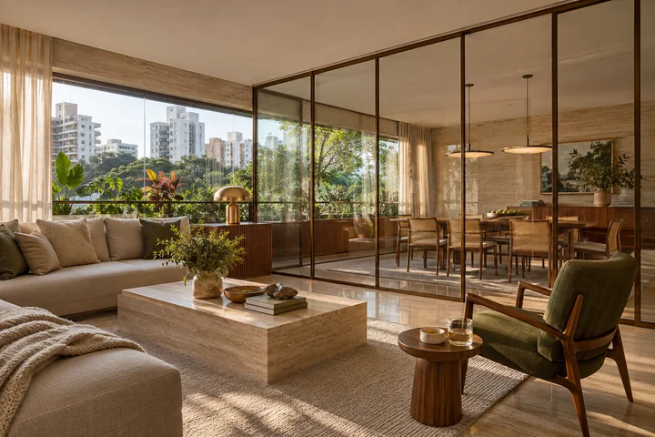
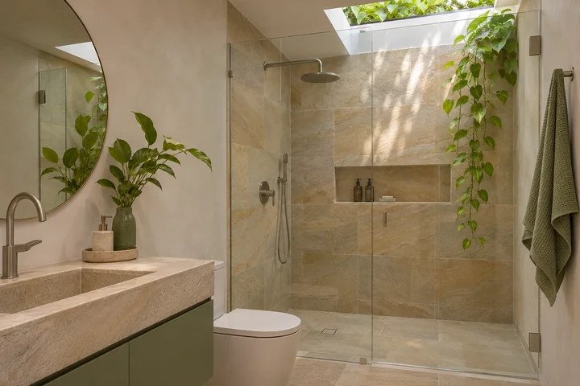
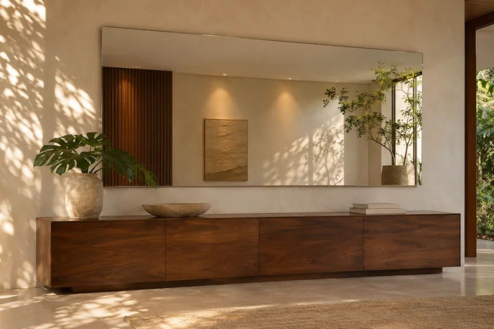

Dois ambientes, a mesma luz.
Uma divisória pode separar a passagem sem esconder o outro lado. O primeiro ponto a observar é onde as pessoas circulam e o que deve continuar visível.
Pensar em uma divisória
Divisórias, boxes e espelhos pensados a partir do espaço que você já tem.
Percorrer os ambientes ↓Uma divisória pode separar a passagem sem esconder o outro lado. O primeiro ponto a observar é onde as pessoas circulam e o que deve continuar visível.
Pensar em uma divisória
Observe onde ficam o chuveiro, a bancada e a porta do banheiro. A equipe precisa entender o espaço livre ao redor da peça antes de propor uma abertura.
Pensar em um box
Considere o que aparece no reflexo e de onde a luz chega. Uma foto da parede e do que fica à frente ajuda a conversar sobre tamanho e posição.
Pensar em um espelhoLeve ao pedido a peça que mais se aproxima da sua ideia.
Em um atendimento real, a equipe conferiria o vão e as condições de instalação antes de preparar uma proposta.